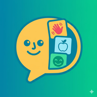

Se hur det ser ut
Tydliga kort, enkel redigering — allt på svenska


Bildstöd Öppna appenBildstöd är ett gratis AKK-verktyg för barn och tonåringar som kommunicerar med bilder. Skapa egna bildkort med foto och din egen röst — barnet trycker, appen pratar.
Öppna appen gratis →Tre steg — sedan är ni igång
Fota barnets egna saker och platser, eller välj bland emojis. Spela in din röst till varje kort.
Stora tydliga kort, sorterade i kategorier som ni själva bestämmer. Appen läser upp ordet.
Två stora knappar längst ner, med talsyntes eller er egen inspelade röst.
Tydliga kort, enkel redigering — allt på svenska
Utvecklad i dialog med föräldrar och pedagoger
Spela in ljud till varje kort — en röst barnet känner igen.
Mat → Frukost → Fil. Bygg strukturen som passar er.
Skonsamt för barn som är känsliga för starkt ljus.
Spara allt till en fil — byt telefon utan att förlora något.
PIN-skyddad redigering. Barnet kan inte ändra av misstag.
Allt sparas på enheten. Inget skickas till någon server.
Bildstöd kostar ingenting och kommer alltid vara gratis för familjer. Inga konton, inga prenumerationer, ingen reklam — barns kommunikation ska inte ha ett prislapp.
Vill du ändå stötta utvecklingen? Swisha en slant via Hihat ☕
Bildstöd fungerar som en riktig app — utan App Store